Fertility, Contraception & Early Pregnancy
From conception to the end of the first trimester: infertility and recurrent loss, contraception and emergency contraception, abortion care in Canada, early ultrasound and miscarriage, ectopic pregnancy and the pregnancy of unknown location, molar pregnancy, and prenatal genetic screening with teratogens. Warm up with 26 questions to find your weak spots, work through the seven topics (the step bar marks the ones you missed), then finish with a 54-question final. Every answer links back to the lecture it came from.
Warm-up quiz
Cold, no notes. It's a diagnostic, not a grade: your score per topic lands on the step bar and tells you where to spend the day.
Fertilization & Infertility
Where sperm meets egg, who to work up and when, the six tests and why each is timed, the big causes, and recurrent loss.
- Fertilization is in the ampulla. Sperm reach the tube in ~5 minutes and capacitate there. The egg lasts 12–24 h, sperm up to 5 days. Best day for sex = the LH-surge day (ovulation ~36 h later).
- Infertility = no pregnancy after 1 year of regular unprotected sex. Work up at 1 year if <35, 6 months if ≥35, and now if there's a known problem (e.g. irregular PCOS cycles).
- Half is male. Always investigate both partners; the semen analysis is cheap and comes first.
- The work-up: day 2–4 FSH, LH, estradiol, prolactin, TSH (always together) · sonohysterogram day 6–12 · "day 21" progesterone (did she ovulate?) · semen analysis · infection screen · AMH = egg reserve, not natural fertility.
- Recurrent pregnancy loss = 2 or more losses, biochemical included. Karyotype both partners, image the cavity, check thyroid, prolactin and glucose. Antiphospholipid syndrome → heparin + aspirin from the first positive test.
Sperm meets egg
| Fact | So what |
|---|---|
| Sperm reach the tube in ~5 minutes | No need to lie down afterwards; what runs out is seminal fluid |
| Capacitation happens in the tube | Sperm gain zona binding, the acrosome reaction and hypermobility |
| Egg lives 12–24 h; sperm up to 5 days (fertile 2–3) | The fertile window sits mostly before ovulation: peak ~2 days before |
| Fertilization in the ampulla | The zona reaction after the first sperm blocks polyspermy |
| LH surge → ovulation ~36 h later | Strip lines equally dark = surge = the best day for sex |
Who to work up, and when
| Situation | Start the work-up |
|---|---|
| Under 35 | After 1 year of regular unprotected sex |
| 35 or older | After 6 months (egg number and quality falling) |
| Known problem, e.g. irregular PCOS cycles | Now: no ovulation, no pregnancy |
| Partners often apart | The 1-year rule means less: frequency matters |
| Number | Means |
|---|---|
| 10–15% | Couples affected |
| 85% / 93% | Conceive by 1 year / by 2 years |
| 41 / 24 / 24 / 11% | Female / male / both / unexplained: half is male |
| Primary vs secondary | Never pregnant vs any past pregnancy (a partner's children don't count) |
The work-up: six tests, each timed for a reason
| Test | When | Answers |
|---|---|---|
| FSH, LH, estradiol, prolactin, TSH | Days 2–4 | Is the brain driving the ovary? Is prolactin or the thyroid the problem? |
| Sonohysterogram (+ foam) | Days 6–12 | Polyps, fibroids; are the tubes open; follicle count (reserve). HSG if unclear |
| Progesterone ("day 21") | ~1 week before the period | Did she ovulate? Regular cycles aren't always ovulatory |
| Semen analysis | Any time, first | The male half: cheap and essential |
| Infection screen | Both partners | Required by law in Ontario before assisted reproduction |
| AMH | Any day | Egg reserve (guides IVF doses), not natural fertility |
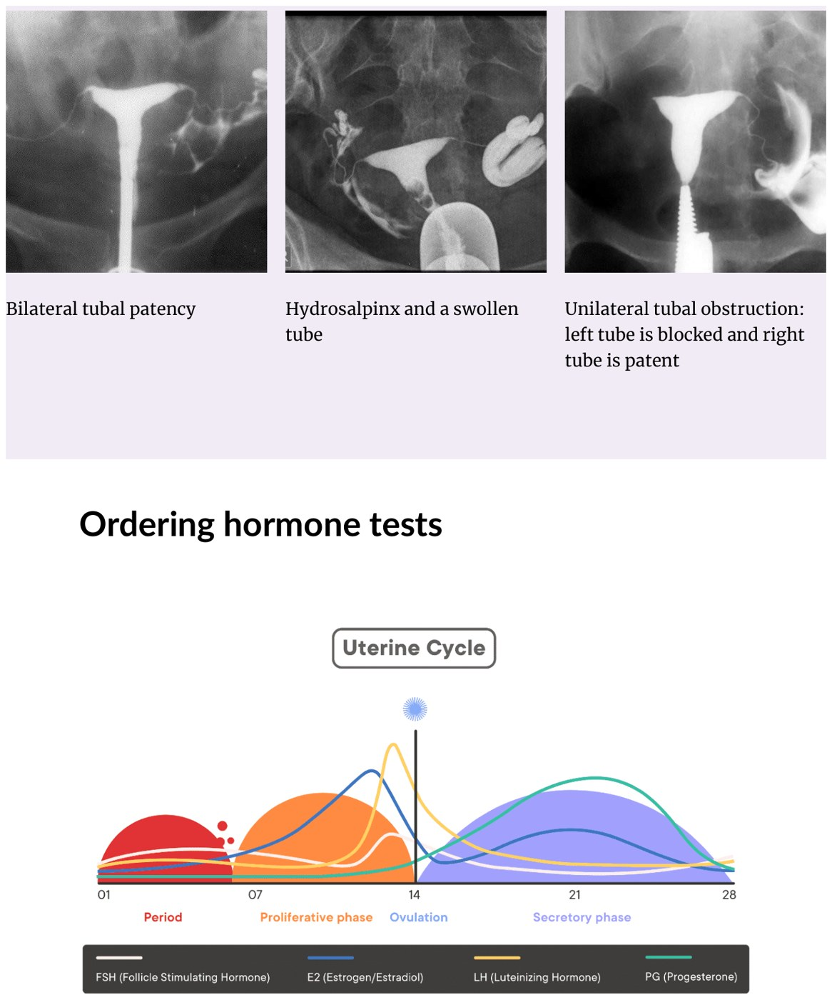
HSG, left to right: both tubes open, a hydrosalpinx, one blocked tube. Below: the cycle that sets when each test is drawn. From the module.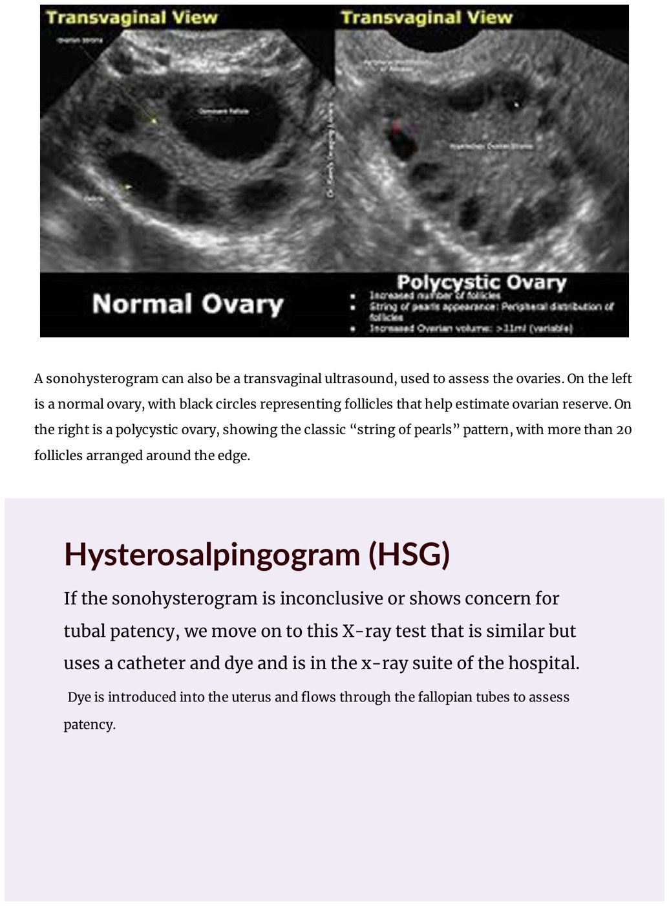
Normal vs polycystic ovary. Right: the "string of pearls", more than 20 follicles around the edge. From the module.Did she ovulate? Is the cycle irregular?
| Method | Verdict |
|---|---|
| Mid-luteal progesterone | The standard: high = she ovulated |
| LH urine strips | Practical; the surge day is the day to aim for |
| Ultrasound tracking | Accurate, but daily scans |
| Cervical mucus | Varies a lot between people |
| Basal body temperature | Rises after ovulation; hard to track |
| Since menarche | Abnormal if |
|---|---|
| First year | Irregular is normal (immature axis) |
| 1–3 years | <21 or >45 days |
| 3 years to perimenopause | <21 or >35 days, or <8 cycles a year |
| Any time after year 1 | Any cycle >90 days |
| Primary amenorrhea | No period by 15, or >3 years after thelarche |
The causes
| Cause | What to know |
|---|---|
| PCOS, the commonest ovulatory cause | Diagnosis of exclusion, lifelong, no cure. Long-term risks: cardiovascular disease, type 2 diabetes, endometrial hyperplasia or cancer. To conceive she usually needs ovulation induction; a 5–10% weight loss can restart ovulation on its own |
| Endometriosis, 30–50% of infertile women | Gold standard laparoscopy + biopsy, but usually diagnosed on symptoms and response to treatment. Stage doesn't match symptoms |
| Tubal | A blocked tube or hydrosalpinx on the sonohysterogram foam or an HSG |
| Male | Half of all infertility: below |
| Endometriosis and… | Plan |
|---|---|
| Not trying to conceive | Hormonal suppression: pill, progestin (Visanne), IUS, implant, Depo; then Orilissa or Lupron |
| Trying, stage I–II | Laparoscopic excision or ablation (helps for up to 9 months) |
| Trying, stage III–IV | IVF: bypasses the toxic pelvis |
| Endometrioma, wants fertility | Avoid surgery: it costs ovarian reserve |
Male factor: half of it
| Cause | Detail |
|---|---|
| Idiopathic | The commonest |
| Varicocele | Second commonest |
| Exogenous steroids | Switch off the drive → zero sperm |
| Erectile or ejaculatory dysfunction | Linked to cardiovascular disease and hypertension |
| Past infections | Obstruct the tract |
| Genetic | Klinefelter, Y-chromosome microdeletions |
| Other | Chemo, radiation; marijuana, smoking, hot tubs |
Count, motility, morphology. Know the test, not the WHO numbers.
LH, testosterone and 17-OHP (non-classic CAH).
An abnormal analysis goes with higher lifetime cancer risk and earlier death.
Recurrent pregnancy loss
| Cause | Share | Do |
|---|---|---|
| Antiphospholipid syndrome | 5–20% | Three specific antibodies. Criteria met → heparin + aspirin from the first positive pregnancy test: it reduces loss |
| Uterine anomaly | 10–15% | Septate, unicornuate or bicornuate uterus; polyps |
| Endocrine | — | Thyroid, prolactin, poorly controlled diabetes |
| Chronic endometritis | — | Two weeks of antibiotics |
| Balanced translocation | ~5% of couples | Karyotype both partners |
| No cause found | ~50% | Frustrating, and common |
Contraception
The effectiveness ladder, what estrogen rules out, the progestin-only methods and IUDs, emergency contraception, and the three cases.
- Counsel with typical-use failure (per 1,000 women, first year): none 850 · condom 180 · pill, patch, ring 90 · Depo 60 · copper IUD 8 · hormonal IUS 2 · implant and vasectomy 0.5.
- LARCs (IUDs, implant) are the most effective and the most continued: >80% at 3 years vs ~50%. Offer them first, at any age and parity.
- The progestin does the contraception; the estrogen mostly controls bleeding, and it owns the contraindications: smoker >15/day over 35, BP ≥160/100, DVT/PE or thrombophilia, migraine with aura, stroke or heart disease, lupus with aPL, current breast cancer. Progestin-only methods and IUDs are usually still fine.
- IUD contraindications are few: pregnancy, current PID or cervicitis, a distorted cavity. PR-positive breast cancer rules out only the hormonal IUS.
- Emergency contraception: copper IUD (best, up to 7 days) > ulipristal (5 days, works during the LH rise) > levonorgestrel (best within 72 h, useless once the LH rise starts). Unsure of the LMP? Pregnancy test first: EC is not an abortifacient.
The effectiveness ladder
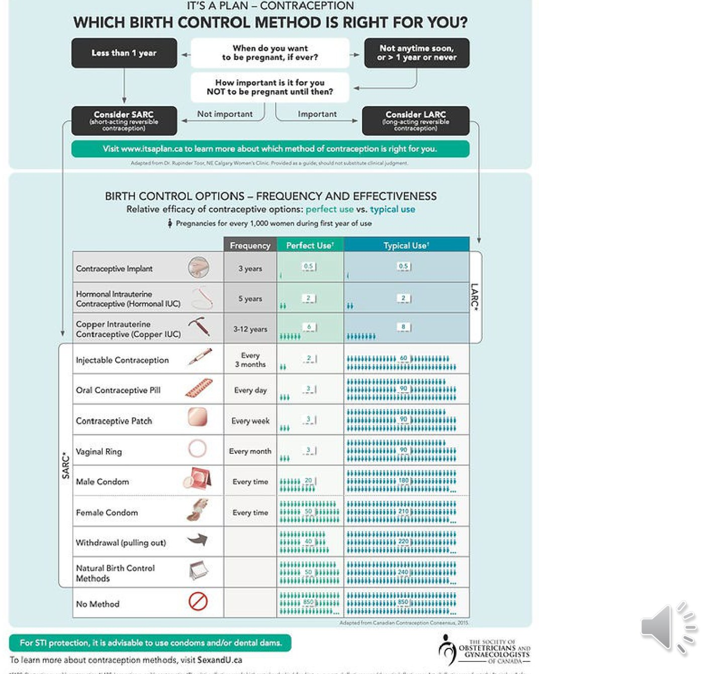
| Method | Typical-use pregnancies / 1,000 / yr |
|---|---|
| Implant | 0.5 |
| Vasectomy | 0.5 (1 in 2,000) |
| Hormonal IUS | 2 |
| Copper IUD | 8 |
| Depo-Provera | 60 |
| Pill, patch, ring; progestin-only pill | 90 |
| Male condom | 180 |
| Natural family planning | 12–25% fail |
| No method | 850 |
Estrogen owns the contraindications
| MEC category | Means |
|---|---|
| 1 | No restriction |
| 2 | Benefits generally outweigh risks |
| 3 | Risks usually outweigh benefits: only if nothing else works or is acceptable |
| 4 | Unacceptable risk: don't use it |
| Category 4 for the pill, patch and ring |
|---|
| Smoker >15 cigarettes/day and age >35 |
| BP ≥160/100; vascular disease |
| Acute DVT/PE, past VTE at high risk of recurrence, known thrombophilia |
| Migraine with aura (stroke risk) |
| Stroke or ischemic heart disease; lupus with positive/unknown aPL |
| Current breast cancer |
| <21 days postpartum (<4 weeks if breastfeeding) |
| Most of these are fine with a progestin-only method or an IUD |
| Problem on the pill | Change |
|---|---|
| Breakthrough bleeding | More estrogen |
| Acne or hirsutism | Drospirenone or cyproterone (no androgenic activity); avoid levonorgestrel (very androgenic) |
| PMDD | Yaz (24/4) is the only pill approved for it |
| Mood swings with the hormone swings | Monophasic, not triphasic |
| Headaches | Less estrogen |
| Endometriosis | Continuous use (skipping the hormone-free week is safe) |
Progestin-only methods
| Method | How | Fail /1,000 | Counsel about |
|---|---|---|---|
| Progestin-only pill (Movisse, Slynd) | Same time every day; mucus; stops ovulation in ~50% | 90 | Timing |
| Depo-Provera | IM every 12–13 weeks; stops ovulation | 60 | Amenorrhea ~70% by 2 years · fertility returns late (~9 months) · weight gain (~7 lb in year 1; the only method proven to) · fewer seizures |
| Implant (Nexplanon) | One etonogestrel rod, inner upper arm; reliably stops ovulation into year 3 | 0.5 | Irregular bleeding |
IUDs
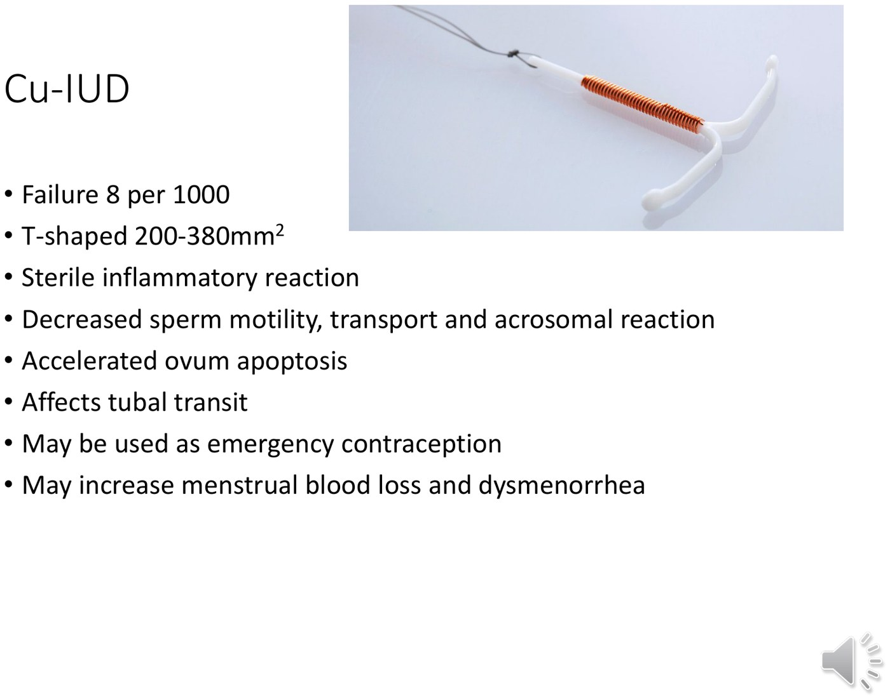
Copper IUD: copper wire on a T. Slide from the lecture.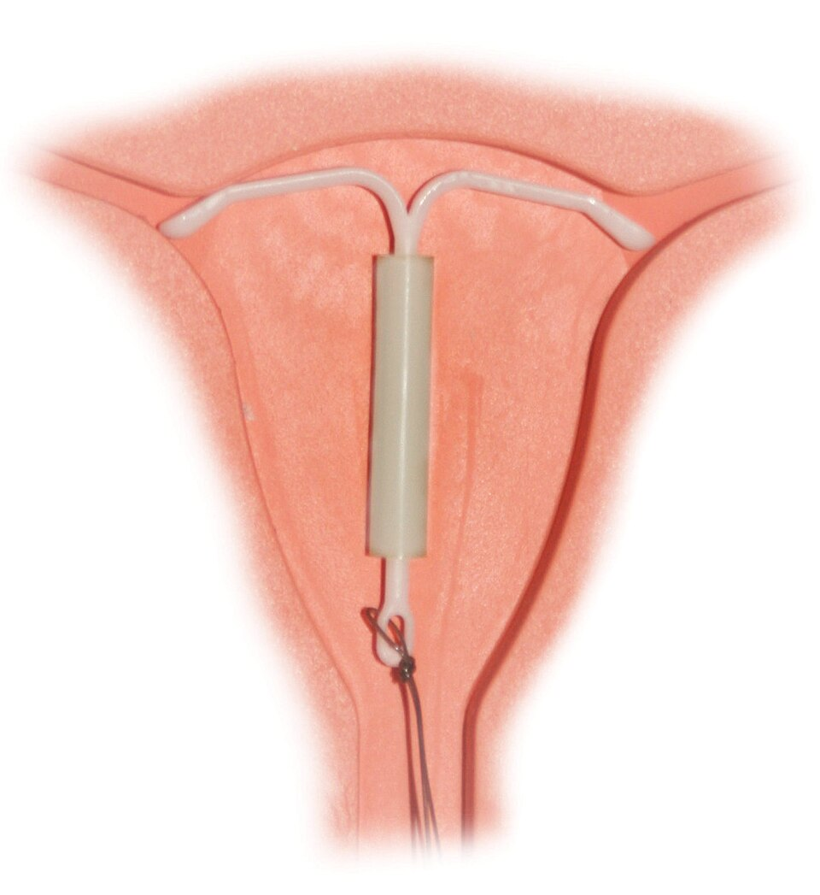
Hormonal IUS (Mirena) on a model of the cavity: the hormone sleeve sits on the stem. Hic et nunc, public domain, via Commons.| Copper IUD | Hormonal IUS (Kyleena, Mirena) | |
|---|---|---|
| Fail /1,000 | 8 | 2 |
| Works by | Copper ions: sterile inflammation, toxic to sperm and egg | Mainly cervical mucus; atrophic lining; some ovulation block |
| Position | Must sit properly (ions fill the cavity) | Works even sitting low |
| Periods | Heavier, more painful | Mirena also treats heavy bleeding |
| Emergency contraception | Yes, up to 7 days | No |
| PR-positive breast cancer | Fine | No |
| Cost | $30–75 | $350–500 |
Absolute IUD contraindications (very few): pregnancy · current PID or cervicitis · just after a septic abortion · a distorted cavity · unevaluated abnormal bleeding · malignant trophoblastic disease with a raised hCG · pelvic TB. None of the estrogen rules apply. And remember: IUD + positive pregnancy test = ectopic until proven otherwise (Step 6).
Emergency contraception
| Method | Up to | How | Catch |
|---|---|---|---|
| Copper IUD | 7 days | Toxic to sperm and egg; blocks implantation | Most effective (0.01% at every time point), and she keeps the contraception |
| Ulipristal (Ella) | 5 days | Blocks follicular rupture: works during the LH rise | Prescription only, often not stocked; not after the surge |
| Levonorgestrel (Plan B) | 5 days (best ≤72 h) | Delays ovulation | Useless once the LH rise has begun; may be weaker with a high BMI |
| Yuzpe (combined pills) | — | Two doses 12 h apart | Lots of nausea: last resort |
Permanent, natural and barrier methods
| Vasectomy | Tubal interruption | |
|---|---|---|
| Failure | 1 in 2,000 | <2% over 10 years |
| Safer, cheaper | Yes: local anaesthetic, no abdomen | Laparoscopy |
| Back-up until | Semen analysis at ~3 months shows no sperm | 1 week after (an egg may be in transit) |
| Bonus | — | Salpingectomy lowers ovarian (serous) cancer risk |
| Method | Key point |
|---|---|
| Lactational amenorrhea | Needs all: <6 months postpartum, (nearly) fully breastfeeding with no gaps >4 h, no periods |
| Temperature, mucus | By the time they change, ovulation has happened |
| Latex condom | The only STI protection; oil-based lube breaks it |
| Lambskin condom | No HIV protection |
| Nonoxynol-9 | Not recommended: raises HIV transmission |
Regret is the commonest complication of permanent contraception, especially when young, but an informed young patient who understands it isn't reversible should be able to have it.
The three cases
| Patient | The issue | What fits |
|---|---|---|
| Clarise, 18: mother DVT, sister PE on the pill; worried about weight | Possible hereditary thrombophilia | No estrogen until tested; no Depo (weight). Progestin-only pill, either IUD or the implant |
| Beth, 41: done having children, light periods, no drug coverage | Cost | Copper IUD ($30–75 for 5–10 years) or permanent contraception (covered by OHIP) |
| Tara, 36: pack a day, PID 2 years ago, HIV, heavy periods, unstable housing | Estrogen absolutely out; adherence and follow-up are barriers | A LARC: the IUS also treats her bleeding. Old PID and HIV aren't barriers; consider same-day insertion with prophylactic STI treatment |
Abortion in Canada
The law and access, what to check first, which method at which gestation, the complications, and the counselling afterwards.
- No federal abortion law since R v Morgentaler (1988): it's treated like any other procedure. No referral needed, and a partner has no veto. The gestational limit varies by province.
- Before any abortion: confirm an intrauterine pregnancy and the gestational age, check Rh status, get consent, and counsel about the procedure and contraception.
- Medical (Mifegymiso), up to 10 weeks (70 days), 95–98% effective: mifepristone (blocks the progesterone receptor), then misoprostol (a PGE1 analogue) 24–48 h later. Success = hCG ↓50% by day 3 or ↓80% by days 7–14; a plateau = failure.
- Surgical: office MVA to 10 weeks, suction D&C to 14+0, D&E in the second trimester. 98% have no complication; the commonest are hemorrhage, infection and retained products.
- Far safer than continuing the pregnancy, and no link to infertility, breast cancer or mental illness. Ovulation can return in 2 weeks: start contraception the same day (an IUD can go in during the procedure).
The law, and the words
| Year | What happened |
|---|---|
| 1969 | Only in hospital, approved by a committee of doctors |
| 1988 | R v Morgentaler: law struck down (Charter, section 7) |
| 1989 | Daigle: a partner has no veto |
| 2014–15 | NB drops its two-physician rule; care becomes portable between provinces; mifepristone approved (available 2017) |
| Today | No federal law; limits vary, from ~12 weeks (Nunavut, PEI) to ~25 (BC) |
| Term | Means |
|---|---|
| Spontaneous abortion | Miscarriage |
| Therapeutic abortion | Any induced abortion, whatever the reason |
| Abortion vs stillbirth | Loss before vs after 20 weeks / 500 g |
| Live birth | Any sign of life, at any gestation |
Before any abortion
Usually by ultrasound; with a good history, early medical abortion can be "no-touch" and virtual.
Rh negative → Rh immunoglobulin (WinRho).
Most clinics are self-referral: no referral is needed.
Which method, at which gestation
| Method | Up to | Key points |
|---|---|---|
| Mifepristone + misoprostol | 10 weeks (70 days) | At home, 95–98% effective; needs follow-up; heavy bleeding and cramps when it passes |
| Methotrexate + misoprostol | 7 weeks (49 days) | When mifepristone isn't available or is contraindicated; teratogenic, so it must be completed |
| Manual vacuum aspiration | 10 weeks | Office, paracervical block; check the tissue for villi and a sac |
| Suction D&C | 14+0 weeks | Cervical prep (misoprostol 1–12 h before, or osmotic dilators 24 h before); suction, not sharp curettage |
| D&E | ~25 weeks | Fewest second-trimester complications; faster |
| Induction of labour | Beyond that; genetic terminations | Intact delivery for autopsy and memory-making; 5–10% need a D&C or D&E for retained placenta |
How the pills work
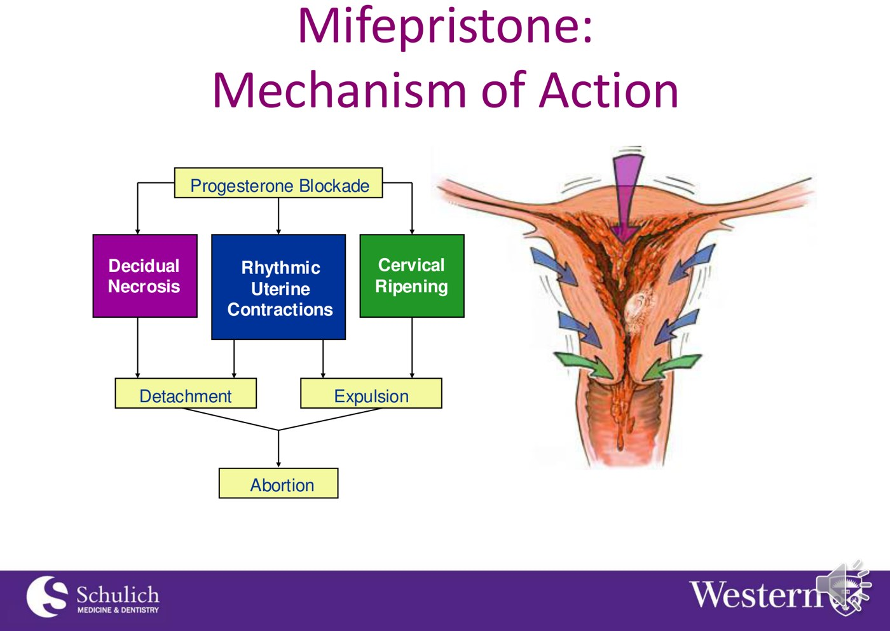
| Drug | Is | Does |
|---|---|---|
| Mifepristone | Anti-progestin | Sits on the progesterone receptor without activating it → decidual necrosis, a softer cervix, more prostaglandin sensitivity |
| Misoprostol | PGE1 analogue | Ripens the cervix (collagen breakdown) and contracts the uterus (↓cAMP, ↑calcium) |
| Methotrexate | Antimetabolite | Blocks dihydrofolate reductase in the cytotrophoblast, so implantation stops |
Did it work? Medical vs surgical
| After a medical abortion | Means |
|---|---|
| hCG ↓ ≥50% by day 3 | Success |
| hCG ↓ ≥80% by days 7–14 | Success |
| hCG plateaus | Failed: a second misoprostol dose completes >50%; the rest need surgery (~3% overall) |
| Ultrasound instead | At 2 weeks (earlier scans show a thick lining that clears itself) |
| Medical | Surgical |
|---|---|
| No procedure or anaesthetic | Invasive, provider-performed |
| Days to weeks to complete | Predictable time frame |
| Early gestation only | Slightly later gestation too |
| 95–99% success | 99% success |
| Needs follow-up | No follow-up needed |
| Bleeding feels heavy | Bleeding feels light |
| Private, at home, her control | Done for her, in clinic or OR |
Complications
| Complication | Clue | Do |
|---|---|---|
| Hemorrhage (commonest) | Atony, low implantation, later gestation | Repeat curettage may be needed |
| Infection, retained products | — | Next commonest |
| Hematometra | Excruciating pain, enlarging uterus, little bleeding, urinary retention | Re-evacuate now |
| Cervical shock | Vasovagal during the block; minutes | Supportive |
| Perforation | During dilatation or suction | Finish under ultrasound or laparoscopy |
| Asherman syndrome | Secondary amenorrhea after (repeat) curettage | Risk very low after one uncomplicated procedure |
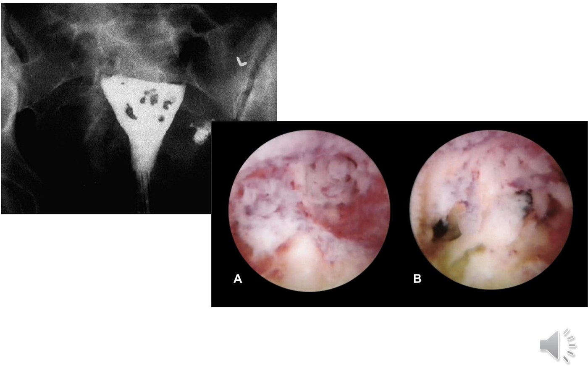
After: safety, contraception, fertility
| Outcome | Deaths per 100,000 |
|---|---|
| Legal abortion | 0.567 |
| Miscarriage | 1.19 |
| Live birth | 7.06 (>12× abortion) |
| Ectopic pregnancy | 31.9 |
| Myth | Answer |
|---|---|
| Causes infertility | No: no more risk than a D&C for miscarriage |
| Causes breast cancer | No evidence |
| Harms mental health | No; relief is the commonest reaction |
| Illegal in Canada | No federal law at all |
| Only single women | 60% already have children |
Early Ultrasound & Miscarriage
What the scan should show and when, how to date a pregnancy, the five types of miscarriage and why they happen, the three ways to manage one, and what the tissue must show.
- Bleeding or pain in early pregnancy: β-hCG + transvaginal ultrasound. Two questions, in order: where is it, and is it viable?
- What appears when: sac ~32 days → yolk sac 5–5+5 weeks (proves it's intrauterine) → embryo 5+5 → heartbeat 6+0. Once there's an embryo, date by CRL. One good first-trimester scan beats the LMP: offer it to everyone, ideally at 7–12 weeks.
- Miscarriage = non-viable intrauterine pregnancy before 20 weeks; 80% happen before 12 weeks. Half are chromosomal (trisomy 16 commonest). Trauma contributes minimally: it wasn't her fault.
- Type = cervix + contents: threatened (closed, heart present) · inevitable (open) · incomplete (open, products retained) · missed (closed, non-viable) · septic (IV antibiotics + D&C). Threatened: expectant, no progesterone.
- Manage: expectant (to 13+6; most pass within 2 weeks), medical (mifepristone + misoprostol beats misoprostol alone), or surgical D&C (95–100%). Rh negative + bleeding → Rh immunoglobulin.
- Only products of conception (villi, trophoblast) in the tissue prove an intrauterine pregnancy. Decidua alone proves nothing.
What the scan shows, and when
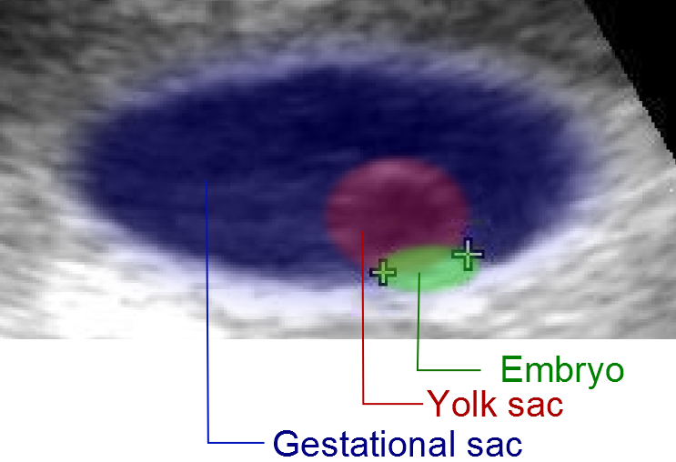
About 5 weeks, colour-coded: gestational sac (blue), yolk sac (red), and a 3 mm embryo (green). Mikael Häggström, from an image by X. Compagnion, CC BY 2.5, via Commons.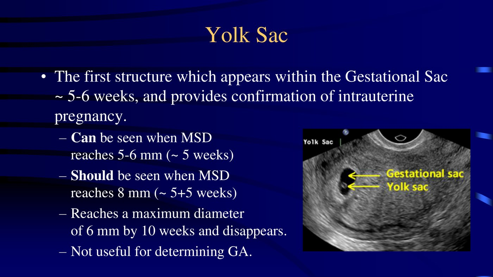
The yolk sac is the proof of an intrauterine pregnancy. Can be seen at a mean sac diameter of 5–6 mm, should be by 8 mm; not used for dating. Slide from the lecture.| Structure | Appears | Use |
|---|---|---|
| Gestational sac | ~32 days (2–3 mm), grows ~1 mm/day | Mean sac diameter dates ±4–11 days: stop using it past 14 mm or once there's an embryo |
| Yolk sac | 5 to 5+5 weeks | Confirms intrauterine; not for dating |
| Embryo (CRL) | 5+5 weeks (1–2 mm) | Best dating, ±3–8 days; most reliable ≥10 mm (~7 weeks); BPD takes over after 14 weeks |
| Heartbeat | 6+0 weeks (CRL ~3 mm) | Viability |
Non-viable now, or look again?
| Diagnostic of a failed pregnancy | Only suspicious: repeat the scan |
|---|---|
| CRL ≥7 mm, no heartbeat | CRL <7 mm, no heartbeat |
| Mean sac diameter ≥25 mm, no embryo | Mean sac diameter 16–24 mm, no embryo |
| No embryo with a heartbeat ≥2 weeks after a sac without a yolk sac | The same, 7–13 days later |
| No embryo with a heartbeat ≥11 days after a sac with a yolk sac | The same, 7–10 days later |
| — | No embryo ≥6 weeks after the LMP; yolk sac >7 mm |
The five types
| Type | Cervix | Picture | Treatment |
|---|---|---|---|
| Threatened | Closed | Bleeding, heart present | Expectant; no progesterone; treat BV if found |
| Inevitable | Open | Bleeding through an open os | Expectant, medical or surgical |
| Incomplete | Open | Some tissue passed; products retained | Remove tissue at the os, then expectant, medical or surgical |
| Missed | Closed | Non-viable, with or without symptoms | Expectant, medical or surgical |
| Septic | — | Fever, infected products | IV broad-spectrum antibiotics + D&C |
| Complete (5.11) | Closed | Products passed | — |
Why it happens
| Cause | Detail |
|---|---|
| Abnormal karyotype: 50% | Trisomies 13, 16, 18, 21, 22; 16 commonest, always lethal; 45,X the commonest single aneuploidy; Robertsonian translocations recur |
| Endocrine | Hypothyroidism, type 1 diabetes |
| Drugs, environment | Alcohol, heavy caffeine, radiation, chemotherapy, IUD; lead, arsenic, benzene, formaldehyde |
| Uterine | Fibroids, Asherman's, septum, polyps |
| Incompetent cervix | Cerclage: elective 12–16 weeks, rescue before 23 |
| Thrombophilia | Inherited |
| What does NOT cause it | |
|---|---|
| Trauma | Minimal contribution |
| Maternal surgery | Usually not (oophorectomy before 10 weeks → progesterone until 10 weeks) |
| Infection | Uncommon, poorly associated |
| Tell her she didn't cause it: the evidence is on your side | |
Three ways to manage it
| Expectant | Medical | Surgical | |
|---|---|---|---|
| Up to | 13+6 weeks | 12+6 weeks | Any |
| How | Wait: 4 weeks is safe; most pass within 2 | Mifepristone, then misoprostol; or misoprostol alone (up to 3 doses) | D&C ± suction |
| Works | 76% missed, 91% incomplete (at 4 weeks) | D&C needed in ~9% with mifepristone vs ~24% without | 95–100%; ~1% serious morbidity |
| Note | — | Mifepristone is off-label here and costly; no prophylactic antibiotics | Consider doxycycline |
Rh negative + positive β-hCG + bleeding = Rh immunoglobulin (WinRho). It protects her next pregnancies, which is exactly why it gets forgotten.
What the tissue must show
| Pathology shows | Means |
|---|---|
| Chorionic villi, trophoblast, implantation site or fetal tissue | Products of conception: intrauterine pregnancy proven |
| Decidualised endometrium only | She was pregnant somewhere. An ectopic is not excluded |
Spontaneous abortion is the commonest cause of first-trimester bleeding, and in a reproductive-age woman, pregnancy complications are ruled out before anything else. Always send tissue to pathology.
Ectopic Pregnancy & PUL
The two rules, who's at risk, reading β-hCG against the discriminatory zone, the pregnancy of unknown location, and expectant vs methotrexate vs surgery.
- Two rules: pain + bleeding + positive β-hCG = ectopic until proven otherwise. An IUD + a positive test = ectopic until proven otherwise.
- ~1–2% of pregnancies, the leading cause of first-trimester death. Over 95% tubal, ampulla ~70%. Risk = a damaged tube: previous ectopic, tubal surgery or sterilization, PID/STI, IUD, IVF, smoking.
- Work-up: CBC, quantitative β-hCG, group and screen, transvaginal US. Discriminatory zone: 1500 classically (6500 transabdominal); 5.10 raises it to 2000–3000 for stable PUL. An empty uterus above it isn't reassuring.
- PUL = positive test, nothing seen: an unfinished answer. Serial β-hCG + ultrasound. A normal rise doesn't exclude ectopic, a fall doesn't either, and no level predicts rupture.
- Unstable, ruptured, hCG >5000 or a fetal heart → surgery. Stable + unruptured + no free fluid + will return → methotrexate. Falling hCG <200 and well → can watch.
- Rh negative → Rh immunoglobulin. After methotrexate: wait 3–6 months to conceive, and take folic acid.
The approach
Who gets one, and where
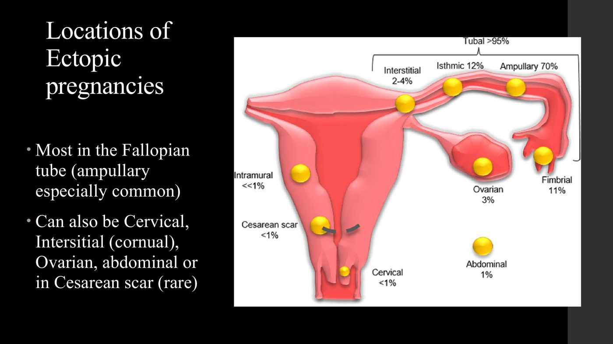
| Risk | History |
|---|---|
| High | Previous ectopic · tubal surgery or pathology · sterilization · IUD · IVF this pregnancy |
| Moderate | Previous STI or PID · DES exposure in utero · smoking · pelvic/abdominal surgery |
| Low | Infertility · age >40 · first intercourse <18 · appendectomy |
Signs of blood in the belly
| She has | Because |
|---|---|
| Pain, amenorrhea, bleeding (or an adnexal mass) | The classic triad |
| Shoulder-tip pain | Blood irritating the diaphragm: a red flag in any reproductive-age woman with abdominal pain |
| Urge to pass stool, rectal pain | Blood pooling in the pouch of Douglas |
| Lightheaded; HR up and BP down on sitting | Hypovolemia: she is bleeding |
| Cervical motion tenderness | Also seen in PID, which is why the pregnancy test comes first |
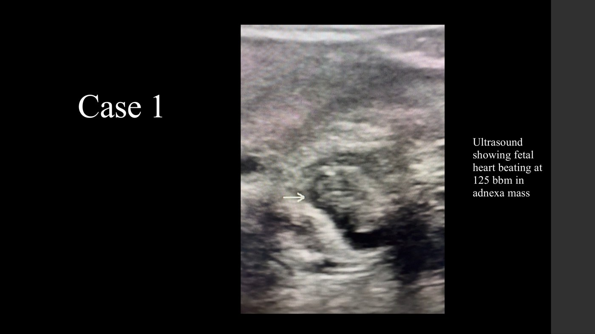
A fetal heart beating in an adnexal mass: definitive, and an indication for surgery. Slide from the session.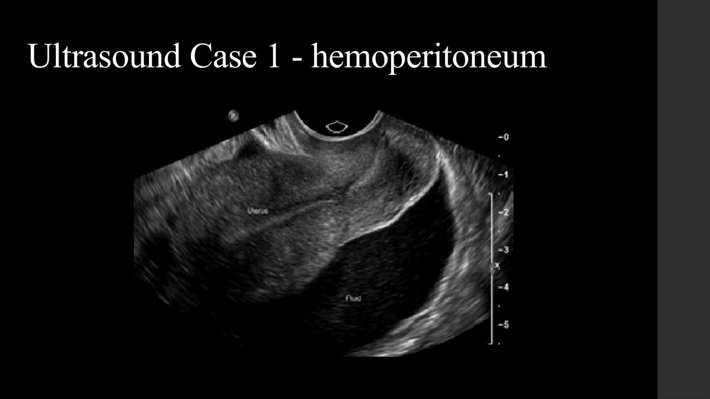
Free fluid (haemoperitoneum) beside the uterus: this takes expectant and medical management off the table. Slide from the session.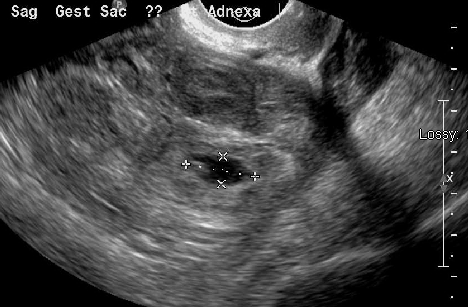
A gestational sac in the adnexa, beside the left ovary. James Heilman, MD, CC BY-SA 3.0, via Commons.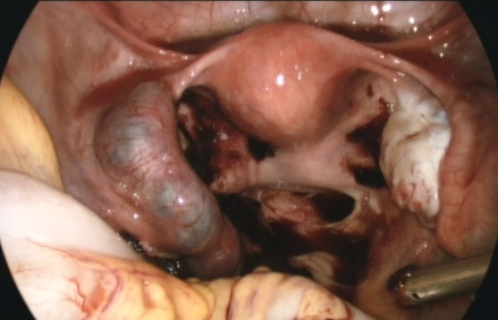
At laparoscopy: a swollen, blue-black tube full of blood (haematosalpinx) from a tubal ectopic. Urskalberer81, CC BY-SA 3.0, via Commons.β-hCG and the discriminatory zone
| Fact | Number |
|---|---|
| Made by | Syncytiotrophoblast; positive ~8 days after ovulation |
| Normal rise, viable IUP | Doubles every 1.4–2.1 days; minimum 53% in 2 days (5.10; 4.9 quotes 66%) |
| Discriminatory zone (TVUS) | 1500 classic → 2000–3000 (5.10) for stable PUL; 6500 transabdominal |
| Empty uterus, hCG 2000–3000 | Viable IUP ~2% |
| Empty uterus, hCG ≥3000 | Viable IUP ~0.5%; ectopic 70× likelier than viable |
| Failing pregnancy, minimum fall in 48 h | 35% from ≥5000 · 24% from 500 · 12% from 50 |
| Resolved | Only once <5 IU/L |
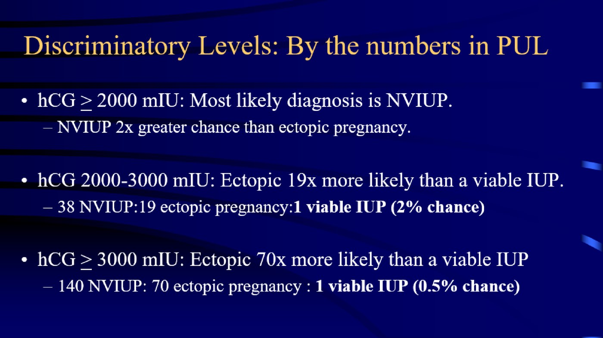
Pregnancy of unknown location
| What it is | A positive test with nothing seen on transvaginal ultrasound: not reassuring, unfinished |
| Could be | An intrauterine pregnancy (viable or failing), or an ectopic |
| Manage | Serial β-hCG and serial ultrasound: the trend decides, not one number |
| Stable, hCG 2000–3000 | Repeat in a few days: a failing IUP is twice as likely as ectopic, and 0.5–2% are viable |
| Keeps rising past ~3000–3500, no IUP | Ectopic becomes likelier |
| High hCG, empty uterus | Heavy bleeding with tissue → a completed loss. No bleeding → high suspicion of ectopic |
Expectant, methotrexate or surgery
| Expectant | Methotrexate | Surgery |
|---|---|---|
| Falling hCG, already <200 · mass <3.5 cm · no rupture or free fluid · no symptoms · no fetal heart · reliable, near an OR · her choice. Resolves in 50–70% | All four: confirmed or suspected ectopic · haemodynamically stable · unruptured, no free fluid · will come back. hCG <5000: 92% success | Unstable · rupture suspected · hCG >5000 · fetal heart · can't follow up · MTX contraindicated · significant pain · her preference |
| Methotrexate (a folate antagonist that kills dividing trophoblast) | Details |
|---|---|
| Absolute contraindications | Breastfeeding · an intrauterine pregnancy · hCG >5000 · liver, kidney or blood disease · immunodeficiency · alcoholism · peptic ulcer · active lung disease |
| Relative | Fetal heart activity · a mass >3.5–4 cm |
| Baseline first | CBC, AST/ALT, creatinine (for marrow, liver and kidney toxicity), group and screen, quantitative hCG, TVUS |
| Working? | hCG falls ≥15% from day 4 to day 7; if not, repeat the dose (15–20% need a second) |
| After | Wait 3–6 months before conceiving; folic acid. Side effects: stomatitis, transaminitis, pneumonitis, marrow suppression |
The pathology
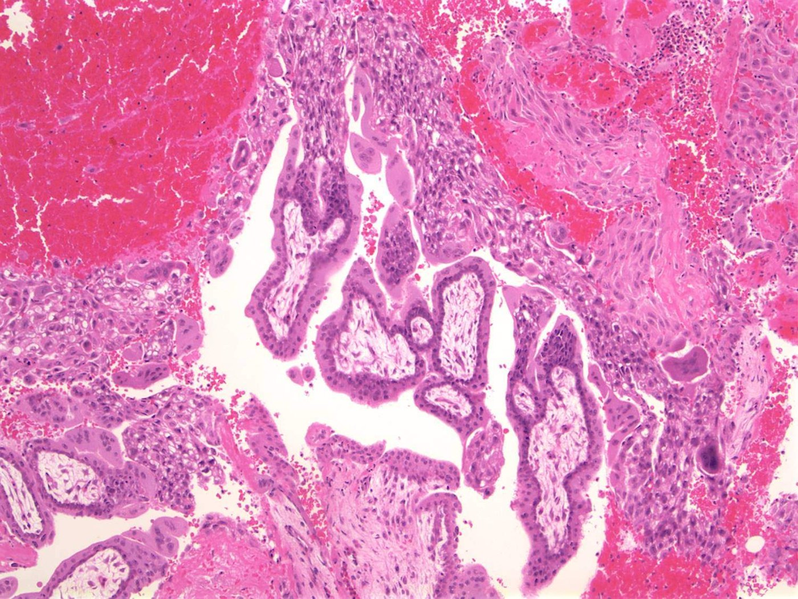
| Look at | Finding |
|---|---|
| The tube, gross | Enlarged, dilated, full of blood (haematosalpinx); wall thinned or ruptured |
| The tube, microscope | Chorionic villi, trophoblast, sometimes fetal parts |
| Her endometrium | Decidualised (it responds to progesterone wherever the pregnancy is) |
| Commonest risk factor (5.11) | PID |
Molar Pregnancy & Choriocarcinoma
Gestational trophoblastic disease: complete versus partial mole from the genetics up, the follow-up that matters, and the cancer that can follow any pregnancy.
- Gestational trophoblastic disease = abnormal trophoblast proliferation: complete mole, partial mole (benign) and choriocarcinoma (malignant). The syncytiotrophoblast makes hCG, so hCG is the marker.
- Complete mole: empty ovum + paternal genes only (46,XX or XY) → no fetus, markedly high hCG, uterus large for dates, hyperemesis, early pre-eclampsia, hyperthyroidism, a "snowstorm" on ultrasound.
- Partial mole: triploid 69 (two paternal + one maternal set) → fetal tissue can be present, hCG low to normal, small for dates, focal cystic change; often missed clinically.
- Treat and watch: D&C, all tissue to pathology, serial hCG to baseline, effective contraception, no pregnancy for at least a year.
- Choriocarcinoma: no villi, malignant trophoblast, haemorrhage and necrosis. Follows a mole (50%), miscarriage (25%) or normal pregnancy (25%). >90% have lung metastases at diagnosis, yet ~80% survive 5 years with chemotherapy.
The genetics decides everything
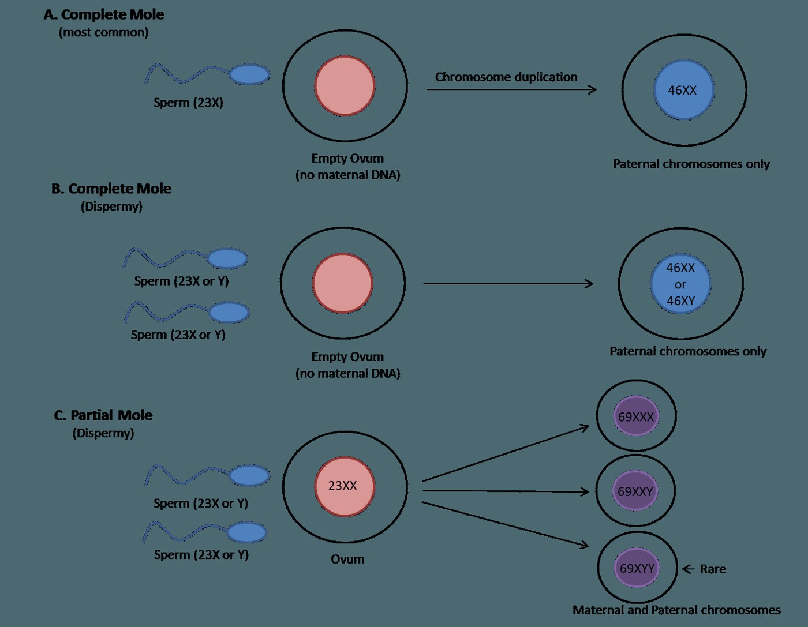
| Complete | Partial | |
|---|---|---|
| Egg | Empty | Normal |
| Sperm | 1 that duplicates (90%) or 2 (10%) | 2 (diandric), or 1 that duplicates |
| Karyotype | 46,XX or 46,XY | 69,XXX or 69,XXY |
| Genes from | Father only | Two paternal sets + one maternal |
| Fetus? | Never | Can be present |
Complete vs partial
| Complete mole | Partial mole | |
|---|---|---|
| Presents | Bleeding · large for dates · hyperemesis · hypertension, pre-eclampsia · hyperthyroidism | Bleeding · small for dates · the rest is rare |
| hCG | Markedly elevated | Low to normal |
| Ultrasound | "Snowstorm", no fetus | Focal cystic change, with a fetus |
| Gross | Abundant swollen, grape-like villi; no fetal tissue | Less tissue; only some villi swollen; a sac or fetal tissue may be there |
| Microscope | Most villi hydropic + trophoblastic proliferation | Two villous populations; less proliferation; irregular villi with inclusions |
| Diagnosed | Earlier (8–12 weeks) thanks to routine ultrasound | Often missed clinically: found by the pathologist |
| Outcome | 80% cured by curettage · 15% invade or persist · 2–3% choriocarcinoma | Most cured · 5–10% invade or persist · rarely choriocarcinoma |
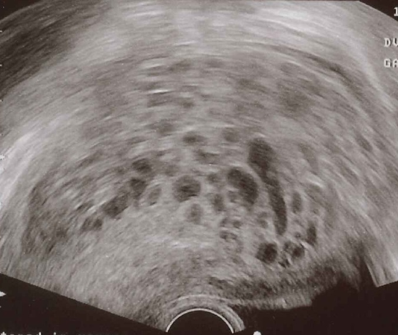
Complete mole on ultrasound: the cavity packed with small cysts ("snowstorm", "bunch of grapes"), no fetus. Mikael Häggström, CC0, via Commons.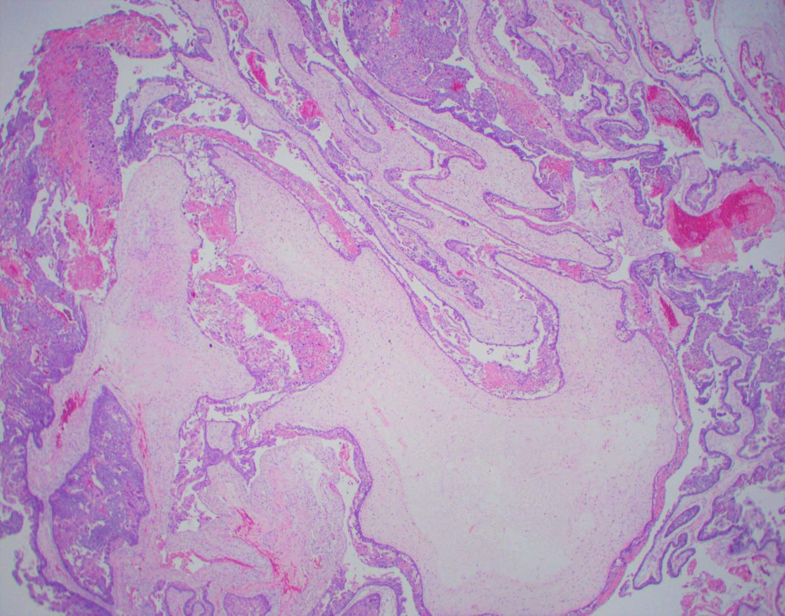
Complete mole: diffuse villous oedema plus abundant trophoblastic proliferation. From the module.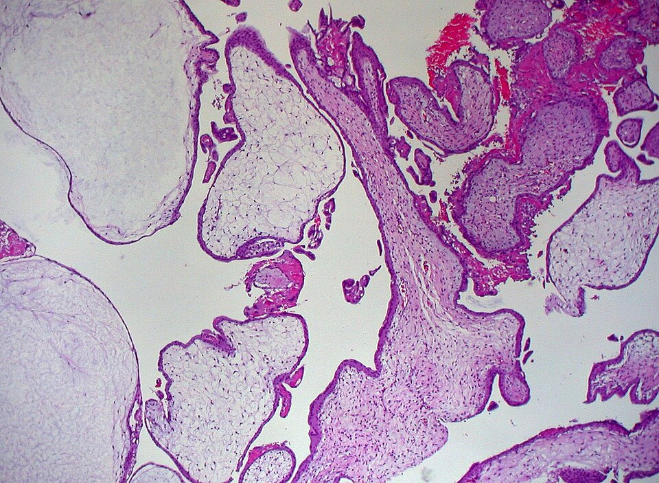
Partial mole: swollen villi (left) beside smaller, more normal ones (right), the two populations. Ed Uthman, CC BY 2.0, via Commons.After the evacuation
Send all the tissue to pathology: that's where the diagnosis is made.
A plateau or rise = persistent disease or choriocarcinoma.
Choriocarcinoma
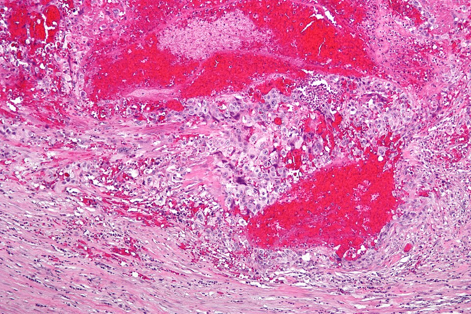
| Choriocarcinoma | |
|---|---|
| After | Mole 50% (usually complete) · miscarriage 25% · normal pregnancy 25%; sometimes years later |
| Presents | Abnormal bleeding + a persistently, markedly high hCG |
| Gross | Red, haemorrhagic uterine mass; the metastases bleed too |
| Microscope | No villi · malignant trophoblast · haemorrhage, necrosis |
| Spreads to | Lung (>90% at diagnosis); then brain, liver |
| Outcome | ~80% 5-year survival with chemotherapy; deaths from liver or brain metastases bleeding |
Genetic Screening & Teratogens
The history that triggers a referral, carrier screening by ancestry, screening versus diagnosis and the clock that drives it, and when an exposure can harm the embryo.
- Screening is not diagnosis. NT, eFTS, the serum screen, the anatomy scan and NIPT give a risk; only CVS (11–13 weeks) or amniocentesis (15–20 weeks) diagnoses. A positive NIPT needs an invasive test.
- The clock: NIPT ≥9 weeks → NT/eFTS 11–13+6 → CVS 11–13 → amnio 15–20 → serum screen 16–20 → anatomy scan 18–20. Termination is an option only before 24 weeks.
- NT >3.5 mm → aneuploidy (T21, 13, 18, 45,X), heart defects, Noonan, skeletal dysplasia. NIPT sees only T21, 13, 18 and the sex chromosomes: a known single-gene mutation needs CVS or amnio.
- Carrier screening by ancestry: European → CF · Mediterranean, Middle Eastern, Asian, African → thalassemia (MCV <80, electrophoresis, mother first) · Ashkenazi Jewish and French-Canadian → Tay-Sachs. A translocation trisomy → karyotype the parents.
- Teratogen timing: weeks 1–2 after fertilisation = all or nothing · weeks 3–8 = organogenesis, most sensitive · week 9 on = functional defects and growth. Counsel before conception, while the drug can still be changed.
Before pregnancy: the history
| Red flag (3-generation pedigree) | Think |
|---|---|
| Consanguinity | Autosomal recessive disease |
| Developmental delay or autism, especially in males | Fragile X, X-linked conditions |
| Birth defects | Chromosomal or syndromic cause |
| ≥3 miscarriages, infertility | A balanced translocation in a parent |
| Male infertility from absent vas deferens | Cystic fibrosis |
| Early heart disease, sudden death | Hereditary cardiac disease |
| Early menopause in a relative | FMR1 premutation |
| Ancestry | Screen for |
|---|---|
| European | Cystic fibrosis |
| Mediterranean, Middle Eastern, Asian, African | Thalassemia, hemoglobinopathies: MCV <80 → electrophoresis; mother first, partner only if she's a carrier |
| Ashkenazi Jewish | Tay-Sachs, Canavan, familial dysautonomia |
| French-Canadian (Bas-St-Laurent, Gaspésie, NB) | Tay-Sachs (1 in 14) |
| Anabaptist (Amish, Old Order Mennonite) | The LHSC community panels |
| FMR1 CGG repeats | Result |
|---|---|
| 6–44 · 45–54 | Normal · intermediate |
| 55–200: premutation | Women: ovarian insufficiency before 40. Older men: FXTAS (tremor, ataxia; mislabelled Parkinson's) |
| >200: full mutation | Fragile X syndrome: the commonest single-gene cause of developmental delay in boys |
During pregnancy: the clock
Placental cell-free DNA in her blood: T21, T13, T18, X and Y only. ~99% detection, <1% false positives, no miscarriage risk. Result in ~10 days.
eFTS = NT + first-trimester serum markers + age: the best of the serum screens.
Samples the placenta. Earlier answer; higher loss risk.
Samples fetal cells in the fluid.
Serum only: for no ultrasound access, or presenting after 14 weeks.
Soft markers matter mainly when the serum screen is also abnormal.
Work backwards from this line.
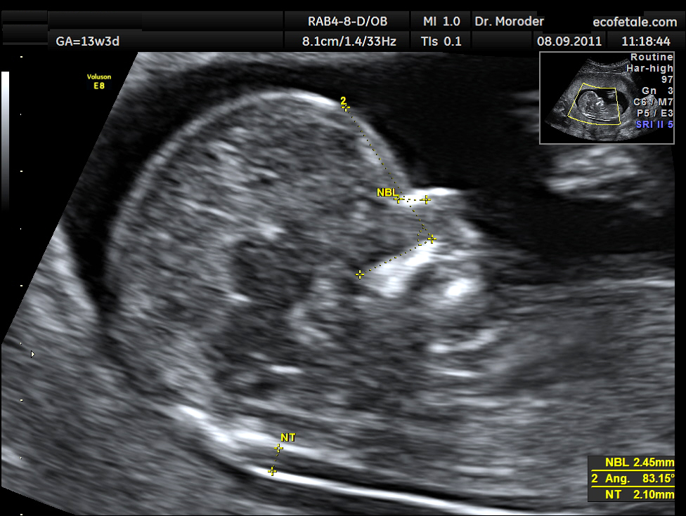
Normal NT at 13+3 weeks: the thin dark line behind the neck measures 2.1 mm. Wolfgang Moroder, CC BY-SA 3.0, via Commons.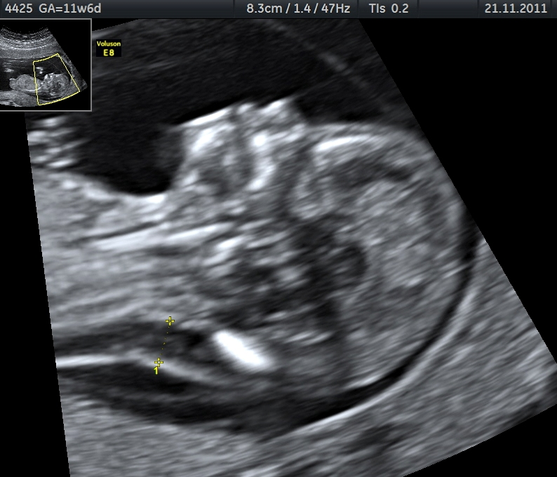
Thickened NT (callipers) at 11+6 weeks, in a fetus with Down syndrome. Wolfgang Moroder, CC BY-SA 3.0, via Commons.| CVS | Amniocentesis | |
|---|---|---|
| When | 11–13 weeks | 15–20 weeks |
| Samples | Placenta (villi) | Fetal cells in the fluid |
| Miscarriage risk | Higher | Lower |
| Maternal cell contamination | Yes | No |
| Confined placental mosaicism | Yes | No |
| Single-gene testing | Both give fetal DNA (karyotype, microarray, gene tests) | |
| NIPT is funded (Ontario) for |
|---|
| A previous trisomy, at any age |
| Maternal age ≥40 |
| NT >3.5 mm |
| A positive eFTS |
| Not first-line for low-risk women: screen everyone, NIPT the high-risk, confirm any positive invasively |
Translocation trisomy: test the parents
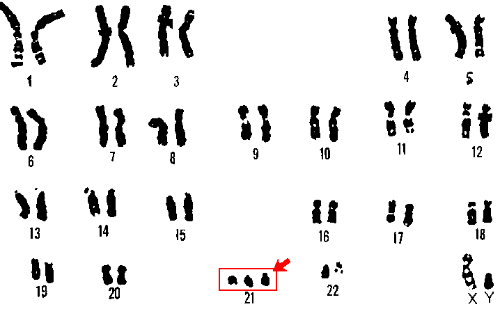
| Free trisomy | Robertsonian translocation trisomy | |
|---|---|---|
| Karyotype | 47 (three separate copies) | 46, with the extra chromosome fused to another, e.g. 46,XX,t(13;21),+13 |
| Cause | Nondisjunction | Can be inherited from a balanced carrier |
| Test the parents? | Usually not | Yes, both |
| Carrier parent | — | 45 chromosomes, healthy, often recurrent miscarriage |
| Next time | — | High recurrence: PGT, or NIPT from 9 weeks + early invasive testing |
| Family | — | A daughter has a 50% chance of being a carrier; cascade testing for siblings |
Never assume, never judge, offer every option. Religion doesn't predict what a couple will choose. Every couple has a 2–3% chance of a baby with an anomaly whatever the screening shows.
Teratogens: timing is everything
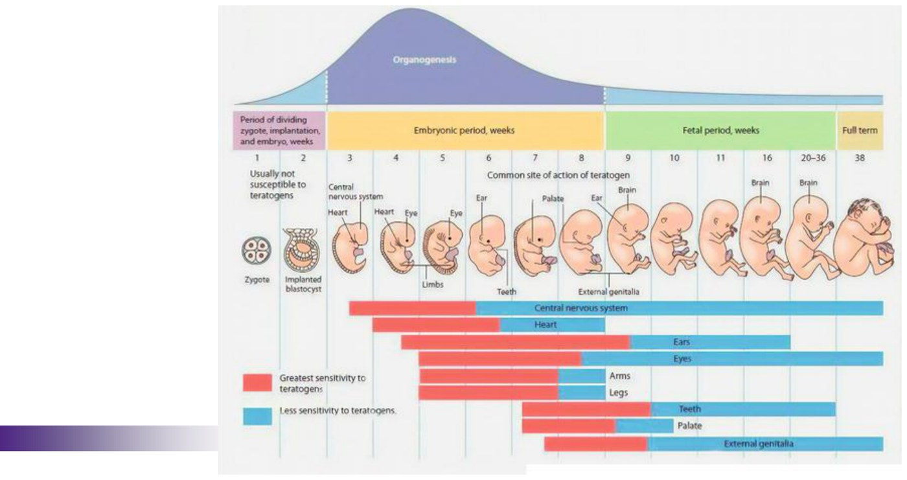
| Weeks after fertilisation | Effect of an exposure |
|---|---|
| 1–2 | All or nothing: loss, or normal development |
| 3–8 | Organogenesis: major structural anomalies |
| 9 to term | Functional defects, minor anomalies, growth restriction |
| Category | Examples |
|---|---|
| Physical | Radiation; hyperthermia (miscarriage, neural tube, heart, abdominal wall defects) |
| Infectious | TORCH, syphilis, Zika, parvovirus |
| Maternal condition | Diabetes: neural tube, CNS, spine, heart, limb defects |
| Chemical | Medications, recreational drugs, toxins, and vitamins, minerals and herbals |
| FDA | Means |
|---|---|
| A | Human studies show no risk |
| B | No human studies; animal studies show no risk |
| C | No studies in animals or humans: "we don't know" |
| D | Human risk exists, but benefits may outweigh it |
| X | Proven harm; risk outweighs any benefit |
| Phase | What you do |
|---|---|
| Pre-conception (matters most) | Optimise the disease · switch to a safer drug · fewest drugs at the lowest dose · 1 mg folic acid daily on antiepileptics · counsel |
| Antenatal | Doses may need to go up |
| Postpartum | Readjust doses, breastfeeding (LactMed), restart or switch back |
Final quiz
54 new questions, mostly clinical vignettes like the progress test. Your results compare each topic with your warm-up.